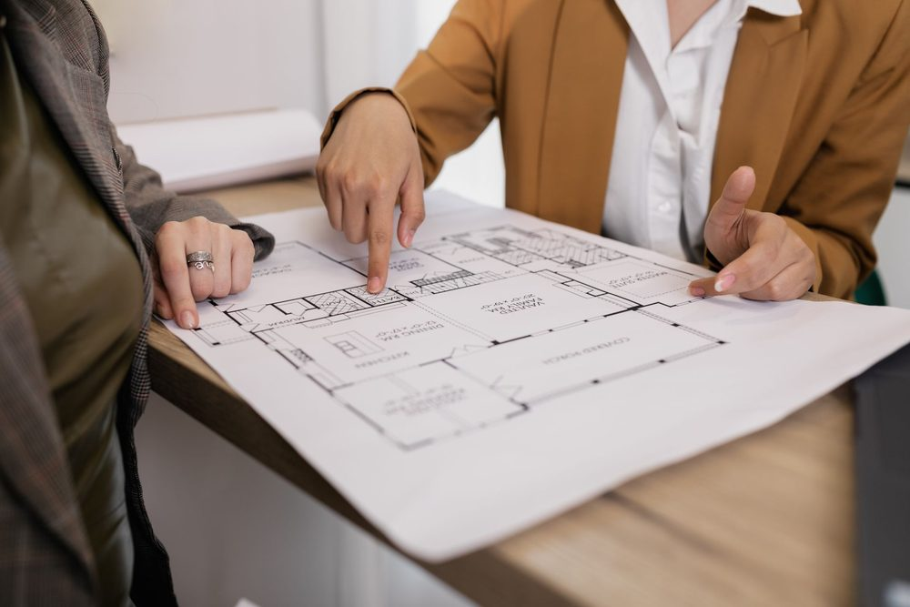
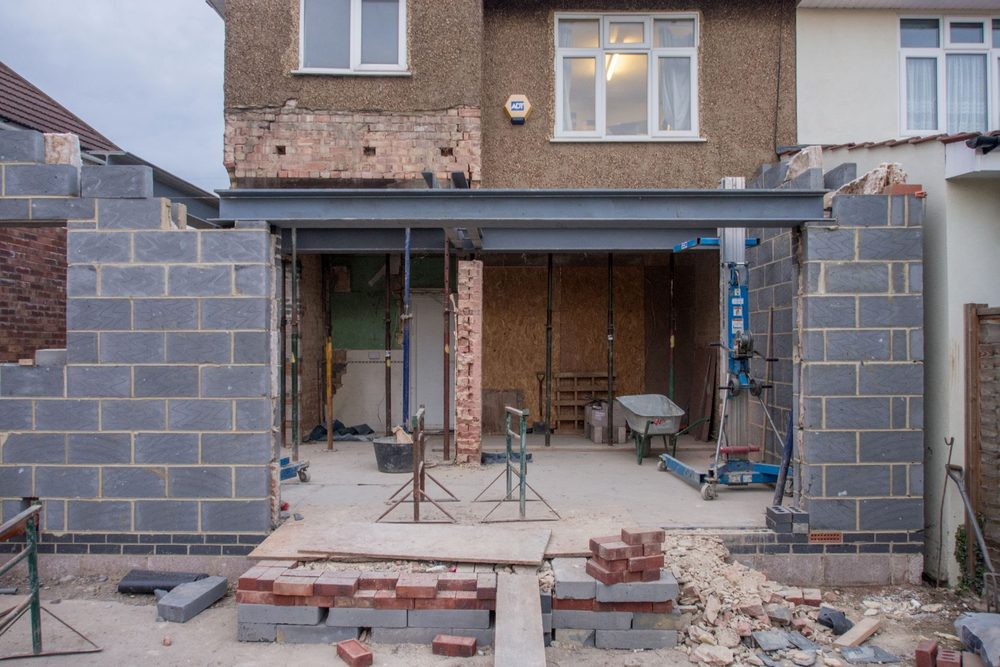

Une étude de structure, c'est quoi exactement ?
Une étude de structure est le travail qui permet de vérifier qu'un bâtiment, ou une partie de bâtiment, tient debout et le reste dans le temps. Un bureau d'études structure calcule les charges (poids propre, occupants, neige, vent, séisme), vérifie que les fondations, les murs, les planchers et les poutres les supportent, puis traduit le résultat en note de calcul et en plans de coffrage et d'armatures exploitables par l'entreprise. Pour un béton armé, ces calculs suivent l'Eurocode 2 ; en zone sismique, l'Eurocode 8 s'y ajoute.
La question « est-ce obligatoire ? » n'a pas une réponse unique. Selon le projet, l'obligation vient de la loi, d'une exigence de l'assurance ou d'un simple bon sens technique. Cet article distingue ces trois niveaux pour que vous sachiez à quoi vous attendre avant de déposer un dossier ou de lancer des travaux.
Les cas où une justification de la structure est exigée
Aucun texte unique ne dit « toute construction exige une étude de structure ». Mais plusieurs situations rendent une justification de la structure indispensable pour obtenir une autorisation, une assurance ou simplement pour pouvoir construire dans les règles.
Permis de construire en zone sismique
En France, le territoire est découpé en cinq zones de sismicité, de la zone 1 (très faible) à la zone 5 (forte, qui couvre notamment la Guadeloupe et la Martinique). Depuis le 1er janvier 2024 (décret n° 2023-1173), dans les zones de sismicité 3, 4 et 5, le dossier de permis de construire d'une maison individuelle doit comporter une attestation de respect des règles parasismiques au stade de la conception : c'est la pièce PCMI13 du formulaire, souvent appelée « AT1 ». Une seconde attestation, la pièce AT.2, accompagne la déclaration d'achèvement des travaux. Ces attestations supposent une conception et un dimensionnement conformes à l'Eurocode 8, ou, pour une maison qui entre dans leur domaine d'application, aux guides de construction parasismique des maisons individuelles (CPMI-EC8). Pour une maison, elles peuvent être signées par un contrôleur technique ou par un « constructeur » lié au maître d'ouvrage par contrat, par exemple le bureau d'études structure. En zone 2, seuls les bâtiments de catégorie III et IV (écoles, grands établissements recevant du public…) sont concernés. Le détail des zones est présenté dans notre article sur les zones sismiques en France, et celui des attestations dans attestations parasismiques AT1 et AT2.
Ouverture dans un mur porteur
Percer un mur porteur retire un élément qui reprend des charges. Il faut alors une poutre de remplacement dimensionnée et des étais pendant les travaux. En pratique, aucun entrepreneur sérieux ne s'engage sans note de calcul, et en copropriété l'assemblée générale doit autoriser des travaux touchant aux parties communes. Voir notre article sur l'ouverture dans un mur porteur.
Surélévation et changement de destination
Surélever ajoute un poids que les fondations et les murs existants n'ont pas forcément prévu. Changer la destination d'un local, par exemple transformer un garage en pièce de vie ou un logement en bureau, modifie les charges d'exploitation à reprendre. Dans les deux cas, la structure existante doit être vérifiée avant les travaux. Le sujet est détaillé dans notre article sur la surélévation d'une maison.
| Usage du plancher (Eurocode 1) | Charge d'exploitation courante |
|---|---|
| Habitation (catégorie A) | 1,5 kN/m² pour les planchers |
| Bureaux (catégorie B) | 2,5 kN/m² |
| Lieux de réunion (catégorie C) | De 2,5 à 5 kN/m² selon la sous-catégorie |
Ces valeurs, issues de la NF EN 1991-1-1 et de son annexe nationale, montrent pourquoi un changement de destination n'est jamais anodin : passer de l'habitation au bureau augmente d'environ deux tiers la charge d'exploitation à reprendre.

Architecte, bureau de contrôle, bureau d'études : trois rôles différents. Au-delà de 150 m² de surface de plancher, une personne physique qui construit pour elle-même doit recourir à un architecte. Cela ne remplace pas l'étude de structure, qui reste le travail d'un bureau d'études. Pour mieux distinguer ces métiers, voir qui fait quoi entre bureau d'études, bureau de contrôle et maître d'oeuvre.
Les cas où elle est fortement recommandée sans être obligatoire
Beaucoup de projets n'ont pas d'obligation formelle, mais gagnent beaucoup à être étudiés. Voici les plus fréquents :
- Une maison individuelle hors zone sismique contraignante : le permis ne l'exige pas, mais les fondations, les chaînages et les planchers restent à dimensionner. Sans étude, on recopie souvent des dispositions « habituelles » qui ne correspondent pas au terrain.
- Un terrain en zone d'argile : la loi ELAN impose des études géotechniques dans les zones d'exposition moyenne ou forte au retrait-gonflement, mais ces études ne dimensionnent pas la structure. Voir notre article sur les sols argileux.
- Une extension accolée à l'existant : la liaison entre ancien et nouveau est un point sensible, source classique de fissures.
- Une charge inhabituelle : piscine sur dalle, terrasse accessible, stockage lourd, grande portée sans appui intermédiaire.
- Des désordres existants : fissures évolutives, affaissement, humidité des fondations. Un diagnostic structurel établit alors l'origine du problème avant toute réparation.
Ce que demande l'assurance décennale
Les constructeurs sont soumis à la responsabilité décennale prévue par le Code civil : pendant dix ans après la réception, ils répondent des dommages qui compromettent la solidité de l'ouvrage ou le rendent impropre à sa destination. Le propriétaire qui fait construire doit, de son côté, souscrire une assurance dommages-ouvrage.
La loi ne liste pas les pièces de calcul à fournir à l'assureur. En revanche, un assureur peut demander à voir les justifications de la structure, surtout pour un ouvrage atypique ou une reprise en sous-oeuvre. En cas de sinistre, l'absence de note de calcul pour une partie structurelle fragilise le dossier de l'entreprise comme celui du propriétaire. Disposer d'une note de calcul signée est donc la meilleure garantie de pouvoir démontrer que l'ouvrage a été conçu dans les règles.
Un contrôle technique n'est pas une étude de structure. Le bureau de contrôle agréé vérifie la conformité de la conception et de la réalisation, mais ne l'établit pas à la place du bureau d'études. MH Structure est un bureau d'études : nous réalisons les notes de calcul et les plans, pas le contrôle technique réglementaire.

Comment procéder concrètement avec MH Structure
Lorsque vous nous contactez, la démarche est simple :
- Vous décrivez le projet : type de bâtiment, localisation, plans disponibles, rapport géotechnique s'il existe.
- Nous identifions ce qui est exigé et ce qui est conseillé : attestation parasismique, note de calcul, plans de coffrage et d'armatures, diagnostic.
- Nous établissons les livrables : note de calcul béton armé, plans de coffrage et d'armatures, attestations parasismiques au permis et à l'achèvement (dites AT1 et AT2) lorsque le projet les requiert et qu'il s'agit d'une maison individuelle.
Nous ne réalisons ni les travaux, ni les études de sol, ni le contrôle technique réglementaire. Notre périmètre est celui du bureau d'études structure.
Vous ne savez pas si votre projet exige une étude de structure ? Décrivez-nous votre projet, nous vous indiquons ce qui est requis et ce qui est conseillé. Devis gratuit sous 48h.
Questions fréquentes
Une étude de structure est-elle obligatoire pour construire une maison ?
Pas toujours sous la forme d'un document exigé par la loi. Depuis le 1er janvier 2024, en zone de sismicité 3, 4 ou 5, le permis de construire d'une maison doit comporter une attestation de respect des règles parasismiques (pièce PCMI13), et une seconde attestation accompagne la déclaration d'achèvement des travaux. En zones 1 et 2, aucune pièce de calcul n'est exigée au dépôt du permis d'une maison, mais les fondations et la structure doivent tout de même être dimensionnées dans les règles.
Faut-il une étude de structure pour ouvrir un mur porteur ?
En pratique, oui. Retirer une partie d'un mur porteur impose de dimensionner une poutre de remplacement et de prévoir des étais. En copropriété, l'autorisation de l'assemblée générale est en plus nécessaire pour toucher aux parties communes.
L'assurance décennale impose-t-elle une note de calcul ?
La loi ne liste pas les pièces à fournir. Un assureur peut cependant demander les justifications de la structure, notamment pour un ouvrage atypique. En cas de sinistre, une note de calcul permet de démontrer que l'ouvrage a été conçu dans les règles.
Un bureau d'études remplace-t-il un bureau de contrôle ?
Non. Le bureau d'études conçoit et calcule la structure, le bureau de contrôle agréé vérifie la conformité. MH Structure est un bureau d'études et ne réalise pas le contrôle technique réglementaire. Pour une maison individuelle, un bureau d'études sous contrat peut toutefois signer l'attestation parasismique, sans être contrôleur technique.